비밀 ▷ 딥러닝2026 중간고사 풀 3 — 초고난도 100문항 + 그림
v5 — 3~8주차, 초고난도. 큰문제 + 부분문제 구조. 총 100문항.
자체 제작 그림 (matplotlib) 포함.
03wk — 경사하강법, 회귀분석 도입
1. 비convex 함수의 경사하강법 — 시작점 의존성
다음 함수의 그래프를 보고 답하시오.
\[f(x) = x^4 - 4x^3 + 4x^2 = x^2(x-2)^2\]
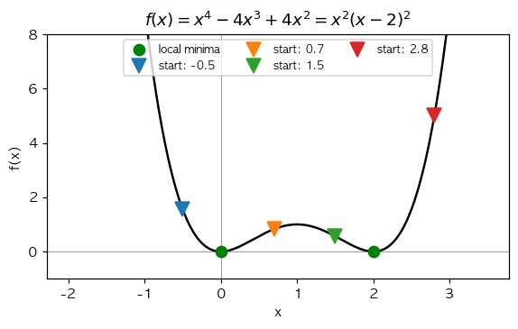
(1) 위 함수의 도함수 \(f'(x)\) 와 critical point (\(f'(x) = 0\) 인 점) 의 개수는?
① \(f'(x) = 4x^3 - 12x^2 + 8x = 4x(x-1)(x-2)\), 3개
② \(f'(x) = 4x^3 - 4x\), 2개
③ \(f'(x) = 2x(x-2)\), 2개
④ \(f'(x) = 4x - 12x^2\), 1개
(2) 위 함수에 대해, 시작점 \(x_{sol} = 0.7\) (그림의 주황색 ▽) 에서 충분히 작은 학습률 \(\alpha\) 로 충분한 epoch 의 경사하강법을 진행하면 어디로 수렴하는가?
① \(x = 0\) (왼쪽 local minimum)
② \(x = 1\) (saddle/maximum)
③ \(x = 2\) (오른쪽 local minimum)
④ 발산
(3) 시작점 \(x_{sol} = 1.5\) (그림의 녹색 ▽) 에서 시작하면 어디로 수렴하는가?
① \(x = 0\)
② \(x = 1\)
③ \(x = 2\)
④ 발산
(4) 시작점 \(x_{sol} = 1.0\) 에서 시작하면 어떻게 되는가? (단, \(f'(1) = 4(1)(0)(−1) = 0\))
① \(x = 0\) 으로 수렴
② \(x = 2\) 로 수렴
③ \(x = 1\) 에 그대로 머무름 (그래디언트가 0이라 업데이트 없음). 단, 이 점은 local maximum 이므로 약간이라도 수치오차가 발생하면 0 또는 2 로 굴러떨어짐
④ 발산
(5) 위 비convex 함수의 경사하강법 결과 분석 중 옳은 것은?
① 경사하강법은 시작점이 어디든 항상 전역 최소값에 수렴
② 경사하강법은 시작점이 속한 「수렴 영역 (basin of attraction)」 의 local minimum 으로 수렴 — 비convex 에서는 시작점 의존적
③ 경사하강법은 비convex 에선 항상 발산
④ 비convex 함수에선 경사하강법 사용 불가
2. 학습률 \(\alpha\) 의 발산 임계값
다음 그림은 \(f(x) = (x-2)^2\) 에 대해 시작점 \(x_{sol} = 6.5\) 에서 학습률을 \(0.1, 0.5, 0.95, 1.05\) 로 바꿔가며 경사하강법을 진행한 결과이다. (f'(x) = 2(x-2))
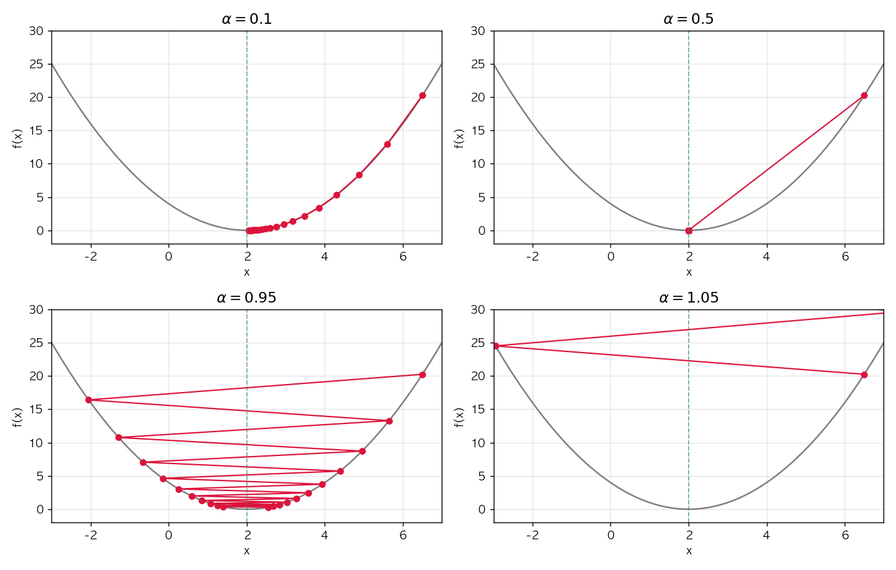
(1) \(f(x) = (x-2)^2\) 에 대해 \(\alpha = 0.5\) 로 1회 업데이트했을 때 (\(x_{sol} = 6.5\) 에서 시작) 의 결과는?
① \(x_{sol} = 2.0\) — 1회만에 정확히 최소값 도달 (= \(6.5 - 0.5 \cdot 2(6.5-2) = 6.5 - 4.5\))
② \(x_{sol} = 0\)
③ \(x_{sol} = -2.5\)
④ \(x_{sol} = 6.5\) (이동 없음)
(2) \(f(x) = (x-2)^2\) 의 경사하강법 업데이트 \(x_{sol} \leftarrow x_{sol} - \alpha \cdot 2(x_{sol} - 2)\) 를 정리하면 \(x_{sol} - 2 \leftarrow (1 - 2\alpha)(x_{sol} - 2)\) 이다. 이로부터 수렴/발산을 결정하는 학습률 조건은?
① \(\alpha > 0\)
② \(0 < \alpha < 1\) — \(|1 - 2\alpha| < 1\) 이어야 수렴, 즉 \(\alpha \in (0, 1)\)
③ \(\alpha < 0.5\)
④ \(\alpha < 2\)
(3) 위 (2) 의 결과를 그림과 비교하면, 발산하는 학습률은?
① \(\alpha = 0.1\) 만
② \(\alpha = 0.95\) 만
③ \(\alpha = 1.05\) 만 — \(\alpha > 1\) 인 경우만 발산
④ \(\alpha = 0.5, 0.95, 1.05\) 모두
(4) 일반화하여 \(f(x) = (x - c)^2\) 의 경우 발산 임계값은? 또한 \(f(x) = a (x-c)^2\) 인 경우는?
① 둘 다 \(\alpha < 1\)
② \(f(x) = (x-c)^2\) 는 \(\alpha < 1\), \(f(x) = a(x-c)^2\) 는 \(\alpha < 1/a\) — 함수의 곡률 (이차계수 \(a\)) 에 따라 임계값이 달라짐
③ \(f(x) = (x-c)^2\) 는 \(\alpha < 1/c\), \(f(x) = a(x-c)^2\) 는 \(\alpha < 1/(ac)\)
④ 곡률과 무관
3. SSE 정규방정식 — 행렬 미분과 closed-form
단순회귀모형 \(y_i = \beta_0 + \beta_1 x_i + \epsilon_i\) 의 SSE 를 행렬 형태 \(L({\bf w}) = \|{\bf y} - {\bf X}{\bf w}\|^2\) 로 표현한다. 다음 통계량이 주어졌다.
\[\sum x_i = 0, \quad \sum y_i = 0, \quad \sum x_i^2 = 100, \quad \sum x_i y_i = 200, \quad n = 100\]
(1) 손실 \(L({\bf w}) = ({\bf y} - {\bf X}{\bf w})^\top ({\bf y} - {\bf X}{\bf w})\) 의 그래디언트 \(\nabla_{\bf w} L\) 의 형태는?
① \(-2 {\bf X}^\top ({\bf y} - {\bf X}{\bf w})\)
② \(-2 {\bf X} ({\bf y} - {\bf X}{\bf w})\)
③ \(2 {\bf X}^\top {\bf X} {\bf w}\)
④ \(2 ({\bf y} - {\bf X}{\bf w})\)
(2) 위 (1) 의 그래디언트를 0 으로 두면 정규방정식 \({\bf X}^\top {\bf X} \hat{\bf w} = {\bf X}^\top {\bf y}\) 가 나온다. 주어진 통계량 (\(\sum x_i = 0\) 라 절편이 분리됨) 으로 \(\hat\beta_1\) 을 구하면?
① \(\hat\beta_1 = \sum x_i y_i / \sum x_i^2 = 200 / 100 = 2\)
② \(\hat\beta_1 = \sum y_i / \sum x_i = 0/0\) — 정의되지 않음
③ \(\hat\beta_1 = 200\)
④ \(\hat\beta_1 = 100\)
(3) 위 데이터에 적절한 학습률·충분한 epoch 으로 경사하강법을 수행했을 때 \(\hat\beta_1\) 이 수렴하는 값은?
① true parameter (이 값은 데이터로는 모름)
② 해석해 \(\hat\beta_1 = 2\) — 경사하강법은 SSE 의 closed-form 해로 수렴
③ \(0\)
④ 학습률 \(\alpha\) 에 의존
(4) 만약 진짜 모델이 \(y_i = 1 + 3 x_i + \epsilon_i\) 인데 우리가 절편 없는 모형 \(y_i = \beta_1 x_i\) 로 적합한다면 (mis-specified model), \(n \to \infty\) 일 때 경사하강법으로 구한 \(\hat\beta_1\) 은?
① 항상 \(3\) 으로 수렴
② 항상 \(0\)
③ \(\beta_1 = E[xy]/E[x^2]\) 로 수렴 — mis-specified 일 때도 SSE 는 어떤 한 값으로 수렴하지만 그것이 true parameter 와 같지 않을 수 있음
④ 절대 수렴하지 않음
4. 알고리즘1 vs 알고리즘2 — 구체 함수 분석
다음 두 알고리즘을 비교한다. (강의노트의 「2차원 경사하강법 아이디어」)
- 알고리즘1: 현재 점 주변 9개 격자점 중 가장 작은 함수값을 갖는 점으로 이동
- 알고리즘2: \(x\) 와 \(y\) 축 방향으로만 조사하여 결정 (편미분 기반)
다음 함수표가 주어졌다. (시작점 \((0, 0)\), 격자 간격 \(0.1\), \(f\) 의 값을 표로 표시)
| \(y \backslash x\) | \(-0.1\) | \(0\) | \(0.1\) |
|---|---|---|---|
| \(0.1\) | \(-100\) | \(0\) | \(0\) |
| \(0\) | \(0\) | \(0\) | \(0\) |
| \(-0.1\) | \(0\) | \(0\) | \(0\) |
(1) 위 함수표에서 알고리즘1 은 어디로 이동하는가? (가장 작은 함수값)
① \((-0.1, 0.1)\) — \(f = -100\) (대각선)
② \((0, 0.1)\)
③ \((0, 0)\) 에 머무름
④ \((0.1, 0.1)\)
(2) 위 함수표에서 알고리즘2 의 \(x\) 방향 비교 (\(f(-0.1, 0), f(0, 0), f(0.1, 0)\)) 에서 결정되는 \(x\) 의 이동방향은?
① 왼쪽
② 오른쪽
③ 중앙 (이동 없음) — 세 값이 모두 0이라 변화 없음
④ 결정 불가
(3) 위 함수표에서 알고리즘2 의 결정 결과는?
① 알고리즘1 과 같이 \((-0.1, 0.1)\) 로 이동
② \((0, 0)\) 에 머무름 — 두 축 모두 평평하므로
③ \((-0.1, 0.1)\) 로 이동
④ 항상 발산
(4) 위 (1), (3) 의 비교로부터 도출되는 결론은?
① 알고리즘1 이 더 정밀하지만 (격자점 더 많이 본다), 차원이 높아지면 계산량 폭발
② 두 알고리즘은 같은 결과
③ 알고리즘2 가 항상 더 정밀
④ 둘 다 잘못된 알고리즘
04wk — 회귀, 미분, net/optimizer
1. Chain rule 과 자동미분
(1) \(z = (x^2 + 1)^3\) 의 \(\frac{dz}{dx}\Big|_{x=2}\) 의 값은?
(단, \(\frac{dz}{dx} = 3(x^2+1)^2 \cdot 2x\))
① \(50\)
② \(100\)
③ \(150\) (= \(3 \cdot 25 \cdot 2 \cdot 1\) … 잠깐 다시: \(3 \cdot 5^2 \cdot 2 \cdot 2 = 300\))
④ \(300\)
(2) 다음 코드의 출력으로 옳은 것은?
x = torch.tensor(2.0, requires_grad=True)
z = (x**2 + 1)**3
z.backward()
print(x.grad)① tensor(50.)
② tensor(100.)
③ tensor(150.)
④ tensor(300.)
(3) 다음 코드의 출력은? (gradient 누적 함정)
x = torch.tensor(2.0, requires_grad=True)
y = x**2
y.backward()
print(x.grad) # 출력 ⓐ
x.data = torch.tensor(5.0)
y = x**2
y.backward()
print(x.grad) # 출력 ⓑ
x.grad = None # ← 여기서 초기화
x.data = torch.tensor(7.0)
y = x**2
y.backward()
print(x.grad) # 출력 ⓒ(힌트: \(f'(x) = 2x\). \(f'(2) = 4\), \(f'(5) = 10\), \(f'(7) = 14\))
① ⓐ \(4\), ⓑ \(14\) (= \(4 + 10\), 누적), ⓒ \(14\) (초기화 후 \(7\) 의 미분)
② ⓐ \(4\), ⓑ \(10\), ⓒ \(14\)
③ ⓐ \(4\), ⓑ \(14\), ⓒ \(28\) (누적 안됨 가정)
④ ⓐ \(0\), ⓑ \(0\), ⓒ \(0\)
(4) 다음 코드 중 \(z = 3(x+2)^2\) 에서 \(\frac{dz}{dx}\Big|_{x=4}\) 를 정확히 계산하지 못하는 것은?
①
x = torch.tensor(4.0, requires_grad=True)
z = 3 * (x + 2)**2
z.backward()
x.grad②
x = torch.tensor(4.0, requires_grad=True)
y = (x + 2)**2
z = 3 * y
z.backward()
x.grad③
x = torch.tensor(4.0, requires_grad=True)
y = x + 2
z = 3 * y**2
z.backward()
x.grad④
x = torch.tensor(4.0, requires_grad=True)
y = (x + 2)**2
z = 3 * y
y.backward() # ← y.backward() 임에 주의
x.grad(5) 위 (4) 의 ④ 코드의 x.grad 출력값은? (\(y = (x+2)^2\) 의 미분 \(\frac{dy}{dx}|_{x=4} = 2(4+2) = 12\), \(\frac{dz}{dx} = 36\))
① \(12\) — y.backward() 는 \(\frac{dy}{dx}\) 를 계산
② \(36\)
③ \(0\)
④ \(108\)
2. 행렬 미분과 매트릭스 회귀
회귀모형을 행렬형태 \({\bf y} = {\bf X} {\bf w} + {\boldsymbol \epsilon}\) 로 본다. 데이터:
\[ {\bf X} = \begin{bmatrix} 1 & 0 \\ 1 & 1 \\ 1 & 2 \end{bmatrix}, \quad {\bf y} = \begin{bmatrix} 1 \\ 3 \\ 5 \end{bmatrix} \]
(1) \({\bf X}^\top {\bf X}\) 의 값은?
① \(\begin{bmatrix} 3 & 3 \\ 3 & 5 \end{bmatrix}\)
② \(\begin{bmatrix} 1 & 1 \\ 1 & 5 \end{bmatrix}\)
③ \(\begin{bmatrix} 3 & 0 \\ 0 & 5 \end{bmatrix}\)
④ \(\begin{bmatrix} 0 & 3 \\ 3 & 0 \end{bmatrix}\)
(2) \({\bf X}^\top {\bf y}\) 의 값은?
① \(\begin{bmatrix} 9 \\ 13 \end{bmatrix}\)
② \(\begin{bmatrix} 1 \\ 3 \\ 5 \end{bmatrix}\)
③ \(\begin{bmatrix} 3 \\ 5 \end{bmatrix}\)
④ \(\begin{bmatrix} 9 \\ 5 \end{bmatrix}\)
(3) 정규방정식 \({\bf X}^\top {\bf X} \hat{\bf w} = {\bf X}^\top {\bf y}\) 의 해 \(\hat{\bf w} = [\hat\beta_0, \hat\beta_1]^\top\) 를 구하면?
(힌트: \(\det({\bf X}^\top {\bf X}) = 15 - 9 = 6\). \(({\bf X}^\top {\bf X})^{-1} = \frac{1}{6}\begin{bmatrix} 5 & -3 \\ -3 & 3 \end{bmatrix}\))
① \(\hat{\bf w} = [1, 2]^\top\) — 즉 \(\hat\beta_0 = 1, \hat\beta_1 = 2\)
② \(\hat{\bf w} = [3, 5]^\top\)
③ \(\hat{\bf w} = [0, 0]^\top\)
④ \(\hat{\bf w} = [9, 13]^\top\)
(4) 위 (3) 의 결과는 데이터 \((0, 1), (1, 3), (2, 5)\) 가 정확히 직선 \(y = 1 + 2 x\) 위에 있음을 의미한다. SSE 의 최소값은?
① \(0\) — 모든 점이 직선 위에 있으므로 잔차가 0
② \(1\)
③ \(5\)
④ \(6\)
(5) What = torch.tensor([[0.0], [0.0]], requires_grad=True) 로 두고 다음 코드를 실행했을 때 What.grad 의 값은?
X = torch.tensor([[1., 0.], [1., 1.], [1., 2.]])
Y = torch.tensor([[1.], [3.], [5.]])
What = torch.tensor([[0.0], [0.0]], requires_grad=True)
Yhat = X @ What
loss = torch.sum((Y - Yhat)**2)
loss.backward()
print(What.grad)(힌트: \(\nabla L = -2 X^\top (Y - X W) = -2 X^\top Y\) (왜냐하면 \(W = 0\)). \(X^\top Y = [9, 13]^\top\))
① tensor([[-18.], [-26.]]) (= \(-2 \cdot [9, 13]^\top\))
② tensor([[18.], [26.]])
③ tensor([[9.], [13.]])
④ tensor([[1.], [2.]])
3. zero_grad 누락의 정량 분석
다음 코드는 zero_grad 가 누락되어 그래디언트가 매 epoch 마다 누적된다.
torch.manual_seed(0)
n = 100
x = torch.randn(n)
y = 1 + 4 * x + torch.randn(n) * 0.3
Y = y.reshape(-1, 1)
X = torch.stack([torch.ones(n), x], axis=1)
What = torch.tensor([[0.0], [0.0]], requires_grad=True)
for epoch in range(30):
Yhat = X @ What
loss = torch.mean((Y - Yhat)**2)
loss.backward()
What.data = What.data - 0.1 * What.grad
# zero_grad 누락(1) 첫 번째 epoch 직후 What.grad 의 첫 번째 원소 (= \(\partial L / \partial \beta_0 = -2 \bar{Y}\)) 의 값으로 가장 가까운 것은? (\(\bar Y \approx 1\))
① 약 \(-2\)
② 약 \(0\)
③ 약 \(4\)
④ 약 \(100\)
(2) 두 번째 epoch 직후 What.grad 의 첫 번째 원소는 (어떤 값에) 첫 번째 epoch 의 그래디언트가 누적된다. 옳은 설명은?
① 두 epoch 의 그래디언트가 합산 됨 — 절대값이 더 커짐
② 두 epoch 의 그래디언트가 평균 됨
③ 두 번째 epoch 의 그래디언트만 남음 (덮어쓰기)
④ 두 epoch 모두 0이 됨
(3) 위 코드를 30 epoch 돌린 결과 What.data 의 값은?
① true 값 \([1, 4]^\top\) 로 정상 수렴
② 그래디언트가 누적되어 업데이트 폭이 매 epoch 더 커지므로 발산하거나 비정상적인 값으로 끝남
③ 항상 \([0, 0]^\top\)
④ zero_grad 와 무관하게 항상 동일
(4) 위 코드의 zero_grad 누락을 고치는 방법으로 옳은 것을 모두 고르시오.
① What.data = What.data - 0.1 * What.grad 다음 줄에 What.grad = None 추가
② What.data = What.data - 0.1 * What.grad 다음 줄에 What.grad.zero_() 추가
③ optimizer 를 사용하고 optimizer.zero_grad() 호출
④ loss.backward() 를 두 번 호출
4. bias=True over-parameterization 의 식별가능성
다음 두 모형을 비교하자.
모형 A: \(X\) 의 첫 열이 모두 \(1\), Linear(2, 1, bias=False) (파라미터 \(w_0, w_1\) 두 개)
모형 B: \(X\) 의 첫 열이 모두 \(1\), Linear(2, 1, bias=True) (파라미터 \(w_0, w_1, b\) 세 개, 출력 \(\hat Y_i = w_0 + w_1 x_i + b\))
(1) 모형 B 의 학습 결과 \((w_0^{(1)}, b^{(1)}) = (3, 0)\), \((w_0^{(2)}, b^{(2)}) = (1, 2)\), \((w_0^{(3)}, b^{(3)}) = (-1, 4)\) 이고 모두 \(w_1\) 의 값이 같다고 하자. 세 결과는 서로 어떤 관계인가?
① 세 결과 모두 같은 함수 \(\hat Y_i = 3 + w_1 x_i\) 를 표현 — \(w_0 + b = 3\) 이 모두 동일하므로 식별 불가능 (over-parameterized)
② 세 결과는 서로 다른 함수
③ 세 결과는 서로 다른 모형
④ 식별 가능
(2) 모형 B 의 학습을 다른 random seed 로 두 번 반복할 때, 결과 비교로 옳은 것은?
① 두 번 모두 정확히 같은 \((w_0, w_1, b)\)
② 두 번 모두 같은 \(w_1\) 과 같은 \(w_0 + b\) 로 수렴하지만 \(w_0, b\) 의 분리는 random init 에 의존
③ 두 번 결과가 완전히 무관
④ 학습이 항상 발산
(3) 모형 A 와 모형 B 가 표현하는 가설공간 (모형이 표현 가능한 함수의 집합) 의 비교로 옳은 것은?
① 모형 A 의 가설공간이 더 넓음
② 모형 B 의 가설공간이 더 넓음
③ 두 모형의 가설공간은 같음 — 둘 다 1차원 직선 \(\{a + b x\}\)
④ 두 모형의 가설공간은 무관
05wk — 로지스틱
1. 시그모이드의 미분과 정성적 성질
다음 그림을 참조하라.
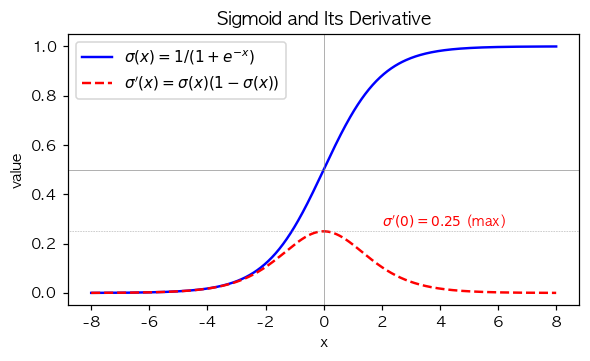
(1) 시그모이드 함수 \(\sigma(x) = \frac{1}{1+e^{-x}}\) 의 도함수 \(\sigma'(x)\) 의 형태는?
① \(\sigma'(x) = \sigma(x)\)
② \(\sigma'(x) = \sigma(x)(1 - \sigma(x))\)
③ \(\sigma'(x) = 1 - \sigma(x)\)
④ \(\sigma'(x) = e^{-x}\)
(2) \(\sigma'(0) = ?\) 그리고 \(\sigma'(x)\) 의 최댓값은?
① 둘 다 \(0\)
② \(\sigma'(0) = 0.25\), 최댓값 \(0.25\) — \(\sigma'\) 의 최댓값은 \(x = 0\) 에서 발생
③ \(\sigma'(0) = 0.5\), 최댓값 \(1\)
④ \(\sigma'(0) = 1\), 최댓값 \(1\)
(3) \(|x| \to \infty\) 일 때 \(\sigma'(x)\) 의 극한 값과 그 함의는?
① \(\sigma'(x) \to 1\) — 학습이 잘 됨
② \(\sigma'(x) \to 0\) — gradient vanishing 으로 학습이 정체될 수 있음
③ \(\sigma'(x) \to \infty\)
④ \(\sigma'(x) \to 0.5\)
(4) \(\sigma'(x) = \sigma(x)(1 - \sigma(x))\) 의 도함수 \(\sigma''(x)\) 가 0 이 되는 점은?
① \(x = 0\) — \(\sigma'\) 가 최댓값을 가지는 곳, 즉 \(\sigma''(0) = 0\)
② \(x = \pm 1\)
③ \(\sigma''\) 는 항상 0
④ \(\sigma''\) 는 0이 안 됨
2. BCE+sigmoid 의 깔끔한 그래디언트와 gradient vanishing
다음 그림은 \(y = 1\) 일 때 sigmoid+MSE 와 sigmoid+BCE 의 sigmoid 직전 값 \(z\) 에 대한 그래디언트 절대값 \(|\partial L/\partial z|\) 를 비교한 것이다.
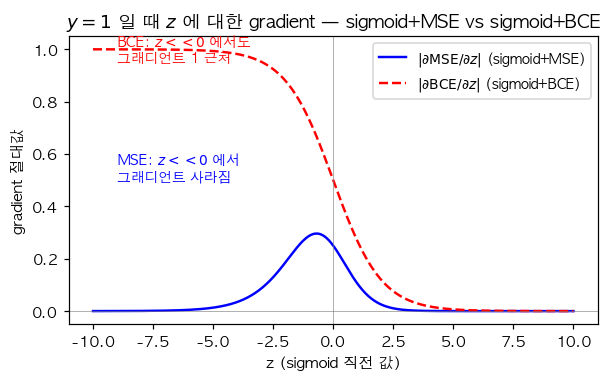
(1) \(\hat y = \sigma(z)\) 라 할 때 BCE 손실 \(L = -(y \log \hat y + (1-y) \log(1-\hat y))\) 의 \(z\) 에 대한 그래디언트 \(\partial L / \partial z\) 의 형태는?
(힌트: chain rule. \(\partial L/\partial \hat y = -y/\hat y + (1-y)/(1-\hat y)\), \(\partial \hat y/\partial z = \hat y(1-\hat y)\). 곱하면…)
① \(\partial L/\partial z = \hat y - y\) — 매우 깔끔한 형태 (sigmoid 의 도함수 \(\sigma'\) 이 분모와 약분되어 사라짐)
② \(\partial L/\partial z = (\hat y - y) \cdot \hat y (1 - \hat y)\)
③ \(\partial L/\partial z = y - \hat y\)
④ \(\partial L/\partial z = \log(\hat y) - \log(1 - \hat y)\)
(2) 같은 모형 (\(\hat y = \sigma(z)\)) 에 대해 MSE 손실 \(L = (y - \hat y)^2\) 의 \(z\) 에 대한 그래디언트는?
① \(\partial L/\partial z = -2(y - \hat y) \cdot \hat y(1 - \hat y)\) — sigmoid 도함수가 곱해짐
② \(\partial L/\partial z = \hat y - y\)
③ \(\partial L/\partial z = y - \hat y\)
④ \(\partial L/\partial z = -2(y - \hat y)\)
(3) 위 (1), (2) 의 결과로부터 「sigmoid + MSE 가 sigmoid + BCE 보다 학습이 어려운 이유」 로 가장 적절한 것은?
① \(|z|\) 가 큰 (포화) 영역에서 \(\sigma'(z) \approx 0\) 이라 MSE 의 그래디언트가 거의 0 → 학습 정체. BCE 는 \(\sigma'\) 이 약분되어 영향 없음
② BCE 가 단순히 더 작은 값을 가짐
③ MSE 가 분류에 절대 사용 불가
④ BCE 의 계산이 더 빠름
(4) 그림에서 \(z = -10\) (즉 \(\hat y = \sigma(-10) \approx 0\)) 인 상태에서 \(y = 1\) 의 학습 데이터에 대한 두 손실의 그래디언트 비교는?
① 둘 다 0 근처
② BCE 의 그래디언트는 \(\hat y - 1 \approx -1\) 로 절대값 1 근처 (학습 잘 됨), MSE 의 그래디언트는 \(\sigma'\) 이 곱해져 거의 0 (학습 정체)
③ MSE 가 더 큼
④ 두 손실의 그래디언트는 같음
(5) 「최악의 초기값」 (예: net[0].bias = -10.0) 에서 시그모이드 + MSE 로 학습하면 학습이 정체되는 이유로 가장 정확한 것은?
① 초기값에서 \(z = w x + b \ll 0\) 라 \(\sigma'(z) \approx 0\), MSE 그래디언트에 \(\sigma'\) 이 곱해져 거의 0이 되어 가중치가 거의 업데이트되지 않음
② Adam optimizer 가 잘못 작동
③ 학습률이 자동으로 0이 됨
④ epoch 이 부족함
3. 결정경계와 해석
마케팅팀 이연구원씨는 (광고비 \(x \in [0, 1]\), 구매여부 \(y \in \{0, 1\}\)) 자료가 다음 진짜 모형에서 나왔다고 가정한다.
\[\pi_i^\ast = \sigma(-2 + 6 x_i), \quad y_i \sim \text{Ber}(\pi_i^\ast)\]
(1) 위 진짜 모형에서 \(\pi^\ast = 0.5\) 가 되는 광고비 \(x^\ast\) 는?
(힌트: \(\sigma(z) = 0.5 \Leftrightarrow z = 0\))
① \(x^\ast = 0\)
② \(x^\ast = 1/3\) — \(-2 + 6 x = 0 \Rightarrow x = 1/3\)
③ \(x^\ast = 0.5\)
④ \(x^\ast = 1\)
(2) \(x = 0\) 일 때 \(\pi^\ast\) 의 값은? (\(\sigma(-2) \approx 0.119\))
① 약 \(0.12\)
② 약 \(0.5\)
③ 약 \(0.88\)
④ 약 \(1.0\)
(3) 위 데이터에 단순 로지스틱 (Sequential(Linear(1,1), Sigmoid())) 을 적합하여 \(\hat w_0, \hat w_1\) 을 얻었을 때, 분류 결정경계 (\(\hat \pi = 0.5\) 가 되는 \(x\)) 의 위치는?
① \(x = 0\)
② \(x = -\hat w_0 / \hat w_1\) — 적합이 잘 되었다면 \(\approx 1/3\)
③ \(x = \hat w_0 + \hat w_1\)
④ \(x = 0.5\) 항상
(4) 회귀와 로지스틱의 closed-form 해의 존재성 비교로 옳은 것은?
① 회귀 (MSE) 는 \(\hat{\bf w} = ({\bf X}^\top {\bf X})^{-1} {\bf X}^\top {\bf y}\) 의 closed-form 해 존재. 로지스틱 (BCE) 은 closed-form 해가 없어 반복법 (GD/Newton) 필요
② 둘 다 closed-form 해 존재
③ 둘 다 closed-form 해 없음
④ 로지스틱 (BCE) 만 closed-form 해 존재
(5) 다음 비교 중 틀린 것은?
| 구분 | 회귀 (MSE) | 로지스틱 (BCE) |
|---|---|---|
| 손실함수 모양 | convex | convex |
| closed-form | 존재 | 없음 |
| \(y_i\) 분포 | \(N(\mu_i, \sigma^2)\) | \(\text{Ber}(\pi_i^\ast)\) |
| \(\hat y_i\) 범위 | \((-\infty, \infty)\) | \((0, 1)\) |
① 회귀와 로지스틱 둘 다 손실함수 모양이 convex
② 회귀는 closed-form 해 존재, 로지스틱은 없음
③ 회귀의 \(y_i\) 는 정규, 로지스틱의 \(y_i\) 는 베르누이
④ 회귀와 로지스틱 모두 \(\hat y_i\) 의 범위가 \((0, 1)\)
06wk — ReLU, 꺾인 직선, 표현력
1. ReLU 합성으로 piecewise linear 만들기
다음 그림은 \(-|x|\) (꺾인 직선, 두 번 꺾임) 에서 시그모이드를 통과시켜 만든 종 모양 곡선이다.
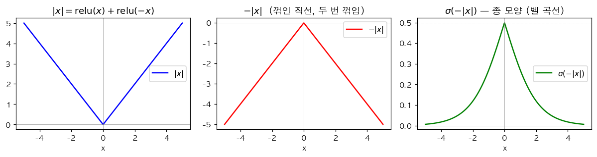
(1) \(|x|\) 를 ReLU 합성으로 표현하면?
① \(|x| = \text{relu}(x) - \text{relu}(-x)\) (이건 \(x\))
② \(|x| = \text{relu}(x) + \text{relu}(-x)\)
③ \(|x| = 2 \cdot \text{relu}(x)\)
④ \(|x| = \text{relu}(2x)\)
(2) 위 그림의 종 모양 곡선 \(\sigma(-|x|)\) 의 최댓값과 그 위치는?
① 최댓값 \(1\), \(x = 0\)
② 최댓값 \(0.5\), \(x = 0\) — \(\sigma(0) = 0.5\)
③ 최댓값 \(0.25\), \(x = 0\)
④ 최댓값 \(\infty\), \(x = 0\)
(3) \(\sigma(-|x|)\) 가 \(0\) 에 수렴하는 영역은?
① \(x \to \infty\) 또는 \(x \to -\infty\) 일 때 \(-|x| \to -\infty\) 이므로 \(\sigma(-|x|) \to 0\)
② \(x = 0\) 일 때
③ 어느 곳에서도 0 에 수렴하지 않음
④ \(x = \pm 0.5\) 일 때
(4) 1-은닉층 (히든 노드 \(m\)) + ReLU + 출력 1차원 네트워크 (Linear(1,m) → ReLU → Linear(m,1)) 가 표현 가능한 piecewise linear 함수의 꺾이는 점의 최대 개수는?
① \(1\)
② \(m\) — 각 ReLU 의 임계점 (\(w_i x + b_i = 0\)) 이 한 곳의 꺾인점
③ \(2m\)
④ 무제한
(5) 다음은 1-은닉층 (3 ReLU 노드) 으로 만든 piecewise linear 함수의 그래프이다.
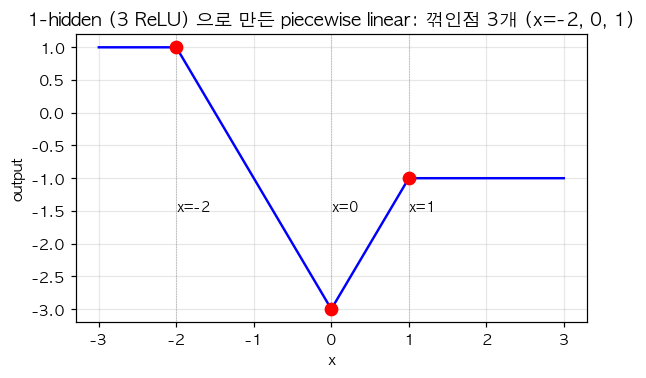
위 함수의 형태는 다음 중 어떤 합성 표현인가?
① \(f(x) = -2 \cdot \text{relu}(x + 2) + 4 \cdot \text{relu}(x) - 2 \cdot \text{relu}(x - 1) + 1\) — 꺾인점 \(x = -2, 0, 1\)
② \(f(x) = 2 \cdot \text{relu}(x) - 4 \cdot \text{relu}(x - 1)\) — 꺾인점 \(x = 0, 1\) 만
③ \(f(x) = \sigma(x)\)
④ \(f(x) = (x - 1)^2\)
(6) 1-은닉층 + ReLU + 출력 1차원 네트워크의 시벤코 정리에 의한 표현력은?
① 노드 \(m\) 을 충분히 키우면 임의의 (보렐가측) 함수를 piecewise linear 로 원하는 정확도로 근사 가능
② \(m\) 의 크기와 무관하게 항상 직선만 표현
③ \(m\) 을 무한히 키우면 매끄러운 함수 (smooth) 만 표현 가능
④ 표현력의 한계는 없음 (어떤 함수든 정확히 표현)
2. 카페인 데이터 — net1 vs net2 의 표현력 차이
약사 박씨는 (카페인 섭취량 \(x \in [-3, 3]\), 집중력 \(y \in \{0, 1\}\)) 자료를 모았다. 자료가 비단조 (증가 후 감소) 형태였다.
다음 그림은 두 네트워크 (net1: 단순 로지스틱 / net2: 1-hidden ReLU + Sigmoid) 의 적합 결과이다.
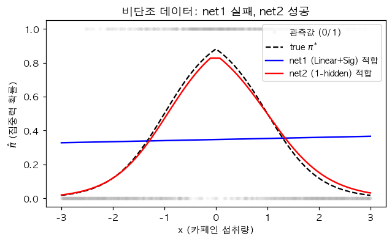
(1) net1 (Linear(1,1) + Sigmoid) 이 위 데이터에 실패하는 가장 깊은 이유는?
① 시그모이드 직전 값 \(z = w_0 + w_1 x\) 가 직선이며, \(\sigma(z)\) 는 단조 (증가/감소) S 곡선만 만들 수 있음. 비단조 (벨 모양) 표현 불가
② 학습률이 너무 작아서
③ epoch 부족
④ BCE 가 아닌 MSE 를 써서
(2) net2 (Linear(1, 2, bias=True) → ReLU → Linear(2, 1, bias=True) → Sigmoid) 의 시그모이드 직전 값 \(z\) 가 표현 가능한 형태는?
① 직선만
② 한 번 꺾인 직선만
③ 직선 또는 한 번 꺾인 직선 또는 두 번 꺾인 직선 (히든 노드 2개로 최대 2 개의 꺾인점)
④ 매끄러운 곡선만
(3) 위 net2 에서 시그모이드 직전 값 \(z(x) = -|x|\) (두 번 꺾임, \(x = 0\) 에서 최댓값 \(0\)) 을 만드는 가중치는?
(힌트: \(-|x| = -\text{relu}(x) - \text{relu}(-x)\))
①
net2[0].weight.data = [[1], [-1]]
net2[0].bias.data = [0, 0]
net2[2].weight.data = [[-1, -1]]
net2[2].bias.data = [0]②
net2[0].weight.data = [[1], [1]]
net2[0].bias.data = [0, 0]
net2[2].weight.data = [[1, -1]]
net2[2].bias.data = [0]③
net2[0].weight.data = [[1], [-1]]
net2[0].bias.data = [1, 1]
net2[2].weight.data = [[1, 1]]
net2[2].bias.data = [-1]④
net2[0].weight.data = [[0], [0]]
net2[0].bias.data = [0, 0]
net2[2].weight.data = [[0, 0]]
net2[2].bias.data = [0](4) 위 (3) 의 가중치로 시그모이드 직전이 \(z(x) = -|x|\) 라면, 출력 \(\hat\pi(x) = \sigma(-|x|)\) 의 형태는?
① \(x = 0\) 에서 최댓값 \(0.5\), \(|x|\) 가 커지면 \(0\) 으로 감소하는 종 모양
② \(x = 0\) 에서 최솟값 \(0.5\), 양쪽으로 \(1\) 로 증가
③ 단조 증가 S
④ 단조 감소 S
(5) 위 (4) 의 종 모양 곡선이 위 카페인 데이터를 적합하기에 적절한가?
① 적절함 — 카페인이 적당량 (예: \(x = 0\)) 에서 집중력이 최대이고 너무 적거나 너무 많으면 떨어지는 형태와 일치
② 부적절 — 종 모양은 단조 데이터에 적합
③ 부적절 — 종 모양은 출력이 음수
④ 적절하지만 학습 불가능
(6) net2 의 학습 가능한 파라미터의 개수는? (\(1 \cdot 2 + 2 + 2 \cdot 1 + 1 = ?\))
① \(5\)
② \(7\)
③ \(9\)
④ \(11\)
3. 표현력의 한계와 시벤코의 함의
(1) 다음 9개 점의 진리표 데이터 (\(x_1, x_2 \in \{-1, 0, 1\}\), \(y \in \{0, 1\}\)):
| \(x_1 \backslash x_2\) | \(-1\) | \(0\) | \(1\) |
|---|---|---|---|
| \(-1\) | 1 | 0 | 1 |
| \(0\) | 0 | 0 | 0 |
| \(1\) | 1 | 0 | 1 |
(코너 4개에서 \(y = 1\), 가운데와 십자형은 \(y = 0\))
이 데이터의 구조를 가장 잘 묘사한 것은?
① \(x_1\) 이 단조 증가하면 \(y\) 가 증가
② \(x_2\) 가 단조 증가하면 \(y\) 가 증가
③ 두 변수 모두 단조 관계로 설명할 수 없는 「꺾인 선형」 구조 — 단순 로지스틱으로 적합 불가
④ \(x_1 = x_2\) 일 때만 \(y = 1\) (== AND 같은 구조)
(2) 위 (1) 의 데이터를 적합하기 위해 시벤코 정리에 따라 충분한 노드를 가진 네트워크가 필요하다. 다음 중 적합 가능성이 가장 높은 것은?
① Sequential(Linear(2, 1), Sigmoid()) — 단순 로지스틱
② Sequential(Linear(2, 1, bias=False), Sigmoid()) — bias 도 없음
③ Sequential(Linear(2, 16), ReLU(), Linear(16, 1), Sigmoid()) — 1-hidden, 충분한 노드
④ Sequential(Linear(2, 1, bias=True)) — Sigmoid 없음
(3) 데이터 수 \(n\) 을 늘리는 것과 네트워크 노드 수 \(m\) 을 늘리는 것의 효과 비교로 옳은 것은?
① 둘 다 표현력 (가능 함수 클래스) 을 늘림
② \(n\) 을 늘리면 추정의 정확도가 좋아질 수 있지만, 표현력은 변하지 않음. \(m\) 을 늘리면 표현력 (가능 함수의 집합) 이 넓어짐
③ \(n\) 을 늘리면 자동으로 \(m\) 도 늘어남
④ 데이터와 노드 수는 무관
(4) 다음 곡선
\[y_i = e^{-x_i} |\cos(3 x_i)| \sin(3 x_i) + \epsilon_i\]
은 음수 \(y\) 도 포함한다. 적합용 네트워크의 마지막 활성함수로 부적절한 것은?
① 활성함수 없음 (회귀)
② Sigmoid — 출력이 \((0, 1)\) 로 제한되어 음수 \(y\) 표현 불가
③ 1-hidden + ReLU + 마지막 Linear (출력 활성함수 없음)
④ 표현력이 충분히 큰 네트워크라면 마지막에 활성함수 없이 적합
(5) 시벤코 정리의 한계 (뭐를 보장하지 않는가) 에 대한 설명으로 가장 정확한 것은?
① 표현력만 보장 — 학습 알고리즘이 그 함수를 실제로 찾는다는 보장 없음, unseen data 에 대한 일반화도 보장 없음, 학습 시간도 보장 없음
② 시벤코는 일반화도 보장
③ 시벤코는 학습 알고리즘 수렴도 보장
④ 시벤코는 얕은 네트워크에선 성립 안함
07wk — 신경망 표현, 시벤코, 모델링
1. 다이어그램 ↔︎ 코드 — 깊은 네트워크
다음 세 다이어그램에 대응하는 네트워크 코드를 답하시오.
다이어그램 A:
\[\underset{(n,1)}{\bf X} \overset{l_1}{\to} \underset{(n,5)}{\bf U^{(1)}} \overset{relu}{\to} \underset{(n,5)}{\bf V^{(1)}} \overset{l_2}{\to} \underset{(n,1)}{\bf U^{(2)}} \overset{sig}{\to} \hat{\bf Y}\]
다이어그램 B:
\[\underset{(n,2)}{\bf X} \overset{l_1}{\to} \underset{(n,3)}{\bf U^{(1)}} \overset{relu}{\to} \underset{(n,3)}{\bf V^{(1)}} \overset{l_2}{\to} \underset{(n,1)}{\bf U^{(2)}} = \hat{\bf Y}\]
다이어그램 C:
\[\underset{(n,1)}{\bf X} \overset{l_1}{\to} \underset{(n,2)}{\bf U^{(1)}} \overset{relu}{\to} \underset{(n,2)}{\bf V^{(1)}} \overset{l_2}{\to} \underset{(n,5)}{\bf U^{(2)}} \overset{relu}{\to} \underset{(n,5)}{\bf V^{(2)}} \overset{l_3}{\to} \underset{(n,1)}{\bf U^{(3)}} \overset{sig}{\to} \hat{\bf Y}\]
(1) 다이어그램 A 에 대응하는 네트워크 코드는?
① Sequential(Linear(1,5), ReLU(), Linear(5,1), Sigmoid())
② Sequential(Linear(5,1), ReLU(), Linear(1,5), Sigmoid())
③ Sequential(Linear(1,5), Sigmoid(), Linear(5,1), ReLU())
④ Sequential(Linear(1,1), ReLU(), Linear(5,5), Sigmoid())
(2) 다이어그램 C 의 학습 가능한 파라미터의 총 개수는? (\(1 \cdot 2 + 2 + 2 \cdot 5 + 5 + 5 \cdot 1 + 1 = ?\))
① \(11\)
② \(25\)
③ \(19\)
④ \(30\)
(3) 다이어그램 A, B, C 의 hidden layer 수를 강의자 방식으로 세면? (학습 가능 파라미터가 있는 layer 만 카운트)
① A: 1, B: 1, C: 2
② A: 2, B: 1, C: 3
③ A: 1, B: 2, C: 3
④ A: 1, B: 0, C: 2
(4) 다이어그램 C 와 같은 깊이의 네트워크를 「2-hidden-layer 네트워크」 라 부른다. 강의자 방식 (학습 layer 만 카운트) 에서 다이어그램 C 의 layer 수와 hidden layer 수의 관계는?
① layer 수 = 3, hidden layer 수 = 2 (= layer 수 - 1)
② layer 수 = 6, hidden layer 수 = 5 (Activation 포함)
③ layer 수 = 2, hidden layer 수 = 1
④ layer 수와 hidden layer 수는 무관
2. XOR 가중치 직접 설계
다음 XOR 데이터를 적합한다.
| \({\bf x}_1\) | \({\bf x}_2\) | \({\bf y}\) |
|---|---|---|
| 0 | 0 | 0 |
| 0 | 1 | 1 |
| 1 | 0 | 1 |
| 1 | 1 | 0 |
다음 그림은 XOR 데이터의 분포 (왼쪽) 와 1-은닉층 ReLU 네트워크가 학습한 결정경계 (오른쪽) 이다.
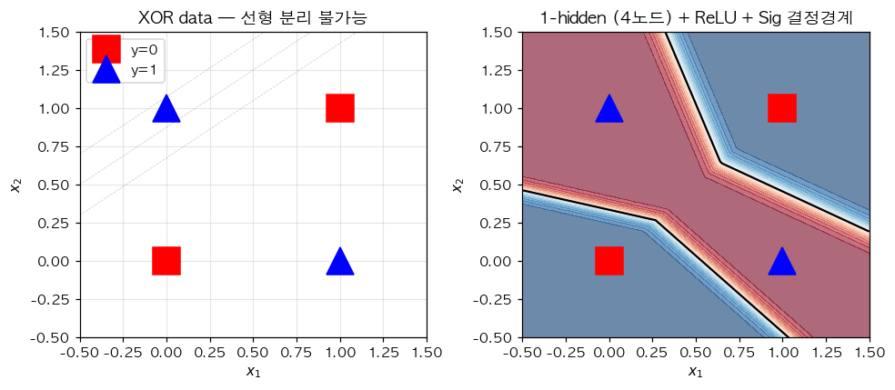
(1) XOR 을 단순 로지스틱 (Sequential(Linear(2,1), Sigmoid())) 으로 적합할 수 없는 이유는?
① 시그모이드 직전이 \(z = w_0 + w_1 x_1 + w_2 x_2\) (선형결합) 이므로 평면 \(z = 0\) 의 한쪽이 1, 다른쪽이 0 (선형분리) 만 가능. XOR 은 선형분리 불가능 (그림 왼쪽 참조)
② 데이터가 적어서
③ Sigmoid 가 BCE 와 호환되지 않아서
④ 학습 알고리즘 문제
(2) 1-은닉층 (히든 노드 2, ReLU + Sigmoid) 로 XOR 을 적합하는 가중치를 설계해 보자. 다음 가중치 후보 중 시그모이드 직전 값이 (0,0)→음수, (0,1)→양수, (1,0)→양수, (1,1)→음수 가 되는 것은?
(힌트: \(z = h_1 - 2 h_2\), \(h_1 = \text{relu}(x_1 + x_2 - 0)\), \(h_2 = \text{relu}(x_1 + x_2 - 1)\). (0,0)→ \(h_1 = 0, h_2 = 0\) → \(z = -0.5\), (0,1)→ \(h_1 = 1, h_2 = 0\) → \(z = 0.5\), (1,1)→ \(h_1 = 2, h_2 = 1\) → \(z = -0.5\))
①
net[0].weight.data = [[1, 1], [1, 1]]
net[0].bias.data = [0, -1]
net[2].weight.data = [[1, -2]]
net[2].bias.data = [-0.5]②
net[0].weight.data = [[1, -1], [1, -1]]
net[0].bias.data = [0, 0]
net[2].weight.data = [[1, 1]]
net[2].bias.data = [0]③
net[0].weight.data = [[0, 0], [0, 0]]
net[0].bias.data = [0, 0]
net[2].weight.data = [[1, 1]]
net[2].bias.data = [0]④
net[0].weight.data = [[1, 1], [-1, -1]]
net[0].bias.data = [0, 0]
net[2].weight.data = [[1, 1]]
net[2].bias.data = [0](3) 시벤코 정리에 의해 XOR 을 적합 가능한 네트워크 중, 충분 조건 으로 옳지 않은 것은?
① 1-은닉층, 노드 수 2 이상, ReLU, 출력 Sigmoid
② 1-은닉층, 노드 수 16, ReLU, 출력 Sigmoid
③ 1-은닉층, 노드 수 512, ReLU, 출력 Sigmoid
④ 0-은닉층 (단순 로지스틱) — XOR 표현 불가능
(4) 시벤코 정리는 다음 중 어느 것을 보장하는가?
① 표현력만 — 학습 알고리즘이 그 함수를 실제로 찾는다는 보장은 없으며, unseen data 에 대한 일반화도 보장하지 않음
② 표현력 + 학습 수렴성
③ 표현력 + 일반화
④ 표현력 + 학습 수렴성 + 일반화 모두
(5) 시벤코 정리의 가정 (조건) 으로 가장 정확한 것은?
① 함수 \(f\) 가 임의의 보렐가측 함수 (어지간한 함수면 됨) 이고, 입력 도메인이 적절히 잘 정의된 경우 1-은닉층 네트워크가 원하는 정확도로 근사 가능
② 함수 \(f\) 가 다항식이어야 함
③ 함수 \(f\) 가 정수값만 가져야 함
④ 데이터 수 \(n\) 이 무한대여야 함
3. 자유낙하 — 도메인 지식 vs 딥러닝, extrapolation
물리학과 최교수는 (높이 \(h\), 자유낙하 시간 \(t\)) 자료를 모았다.
- 모형 A: 도메인 지식 (\(t \propto \sqrt{h}\)) 활용, \(\hat t = \hat w \cdot \sqrt{h}\) — 1 파라미터
- 모형 B: 1-은닉층 (노드 64, ReLU), \(\hat t = net(h)\)
다음 그림은 두 모형의 학습 결과와 extrapolation (학습 범위 바깥) 행동이다.
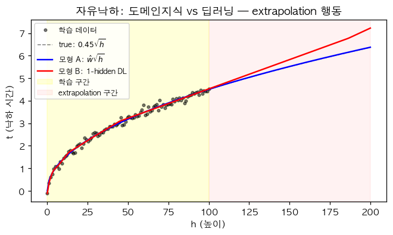
(1) 학습 데이터 범위 안 (\(h \in [0, 100]\)) 에서 두 모형이 비슷한 예측을 내놓는 이유로 가장 적절한 것은?
① 우연이 아니라 두 모형이 같은 함수 (\(\sqrt{h}\)) 를 학습했기 때문
② 학습 데이터에서 두 모형이 비슷한 출력을 내는 어떤 함수를 각각 찾았기 때문 — 시벤코는 함수 형태 식별 보장이 아님
③ \(h_0\) 가 학습 데이터에 직접 포함되어 있기 때문
④ Adam 이 정답을 보장하기 때문
(2) 학습 범위 바깥 (\(h \in [100, 200]\)) 에서 두 모형의 예측이 다른 이유로 가장 적절한 것은? (그림 참조)
① 모형 A 는 \(\sqrt{h}\) 곡선을 그대로 따라가지만, 모형 B 는 ReLU 기반 piecewise linear 이므로 학습 데이터 끝의 마지막 직선 조각이 그대로 이어지기 때문 (extrapolation 이 직선)
② 모형 A 가 잘못 학습됐기 때문
③ 모형 B 가 100% 정확하기 때문
④ 학습 데이터 바깥에서 데이터 잡음이 더 크기 때문
(3) 1-은닉층 + ReLU + 출력 Linear 의 extrapolation 행동에 대한 일반적 설명으로 옳은 것은?
① 학습 데이터 범위 바깥에서는 학습 데이터 끝의 마지막 ReLU 조각이 직선으로 이어짐 — 즉 extrapolation 이 항상 piecewise linear (직선) 형태
② Extrapolation 이 매끄러운 곡선
③ Extrapolation 이 0 으로 수렴
④ Extrapolation 은 무작위
(4) George Box 의 명언 “All models are wrong, but some are useful” 의 가장 적절한 해석은?
① 모든 모형은 본질적으로 현실을 단순화·이상화한 근사이므로 wrong 이지만, 평가 기준은 ‘true vs wrong’ 이 아니라 ‘useful vs useless’ 로 가져가야 한다
② 모든 모형은 틀렸으므로 사용 불가
③ 진짜 모형을 찾는 것이 가장 중요
④ 모형 비교로 항상 어느 모형이 wrong 인지 결정 가능
(5) 다음 학생들의 토론에서 강의 내용과 일치하는 (옳은) 주장만 모은 것은?
- 재현: “두 모형이 다른 답을 내면 둘 중 적어도 하나는 wrong”
- 슬기: “Box 의 핵심은 모형 비교가 아니라 평가 기준 ‘useful vs useless’”
- 희석: “시벤코 정리에 의해 모형 B 는 underlying \(\sqrt{\cdot}\) 형태를 식별”
- 은희: “모형 B 는 \(\sqrt{\cdot}\) 형태 식별이 아니라 학습 범위 안에서 비슷한 출력을 내는 어떤 함수를 찾은 것”
- 세민: “모형 A 는 1 파라미터, 모형 B 는 ~1500 파라미터로 도메인 지식 vs 모형 복잡도 trade-off”
① 재현, 희석
② 슬기, 은희, 세민
③ 슬기, 희석
④ 모두 옳음
4. 표현력의 정량화
(1) 1-은닉층 + ReLU + 노드 수 \(m\) 인 네트워크가 만들 수 있는 piecewise linear 함수의 꺾이는 점의 최대 개수는?
① \(1\)
② \(m\)
③ \(m^2\)
④ \(2^m\)
(2) 시벤코 정리에 의한 표현력 한계의 함의는?
① 노드 수 \(m\) 을 충분히 키우면 어떤 매끄러운 함수도 원하는 정확도로 piecewise linear 로 근사 가능
② 노드 수와 표현력은 무관
③ 노드 수를 키우면 매끄러운 함수만 표현 가능
④ 노드 수 키우면 piecewise linear 도 못 만듦
(3) 자유낙하 모형 B 가 1-은닉층, 노드 64, ReLU 라면 시그모이드 직전 값 (= 출력) 은 최대 몇 번 꺾인 직선?
① \(1\)
② \(64\)
③ \(128\)
④ 무제한
08wk — 이미지 이진분류, 오버피팅, 드랍아웃
1. 이미지 데이터의 reshape 와 정보 보존
장교수는 28×28 흑백 이미지로 「강아지」 vs 「고양이」 이진분류를 한다.
X.shape # torch.Size([12000, 1, 28, 28])
X = X.reshape(-1, 784)(1) X.reshape(-1, 784) 의 결과 shape 는?
① (12000, 784)
② (12000, 1, 784)
③ (784, 12000)
④ (12000 * 784,)
(2) 위 reshape 가 데이터의 정보를 보존하는가?
① 모든 픽셀 값이 그대로 보존됨 — 단, 2차원 공간 구조 (인접 픽셀 관계) 는 1차원으로 펼쳐지면서 사라짐
② 픽셀 값 일부 손실
③ 픽셀 값과 공간 구조 모두 보존
④ 모든 정보 손실
(3) 위 reshape 후 1차원 벡터를 다시 원래 이미지로 복구하는 코드는?
① X.reshape(-1, 1, 28, 28)
② X.reshape(28, 28)
③ X.reshape(-1, 28, 28, 1)
④ X.reshape(784, -1)
(4) 다음 코드와 동일한 결과를 주는 것을 모두 고르시오.
X = torch.randn(12000, 1, 28, 28)
X = X.reshape(-1, 784)① X.reshape(12000, 784)
② X.reshape(12000, -1)
③ X.flatten(start_dim=1)
④ X.reshape(-1, 28, 28)
2. MLP 학습과 정확도 평가
X.shape = (12000, 784), Y.shape = (12000, 1), \(Y \in \{0, 1\}\) (강아지=0, 고양이=1).
net = torch.nn.Sequential(
torch.nn.Linear(784, 32),
torch.nn.ReLU(),
torch.nn.Linear(32, 1),
torch.nn.Sigmoid()
)
loss_fn = torch.nn.BCELoss()
optimizer = torch.optim.Adam(net.parameters())(1) net 의 학습 가능한 파라미터 개수는? (\(784 \cdot 32 + 32 + 32 \cdot 1 + 1 = ?\))
① \(25{,}088\)
② \(25{,}121\)
③ \(25{,}153\)
④ \(817\)
(2) 학습이 끝난 후 정확도 (accuracy) 를 계산하는 코드로 옳은 것은?
① (Y == (net(X).data > 0.5).float()).sum() / 12000
② (Y == net(X).data).sum() / 12000
③ net(X).mean()
④ loss_fn(net(X), Y)
(3) 위 (2) 의 정확도 코드 중 (net(X).data > 0.5).float() 의 의미는?
① 확률 \(\hat\pi_i\) 를 임계값 0.5 로 잘라 0 또는 1 의 예측 라벨 \(\hat y_i\) 로 변환
② \(\hat\pi_i\) 의 평균
③ \(\hat\pi_i\) 의 최댓값
④ \(\hat\pi_i\) 그대로
(4) 만약 데이터가 강아지 11000개, 고양이 1000개로 불균형 (class imbalance) 이라면, 다음 분류기 중 정확도가 가장 높을 가능성이 큰 것은?
① 항상 \(\hat y = 0\) (강아지) 로 예측 — 정확도 11000/12000 ≈ 92%
② 항상 \(\hat y = 1\) (고양이) 로 예측 — 정확도 1000/12000 ≈ 8%
③ 잘 학습된 모형
④ 무작위 예측
(5) 위 (4) 와 같은 클래스 불균형 상황에서 정확도가 모형 평가의 좋은 지표가 아닌 이유는?
① 단순히 다수 클래스로 예측하는 자명한 모형도 높은 정확도를 가질 수 있음 — 정밀도 (precision), 재현율 (recall), F1 등 다른 지표 필요
② 정확도가 항상 100%
③ 정확도가 항상 0%
④ 정확도와 손실은 같은 값
3. 오버피팅 — 정량 분석
「입력 \(x\) 와 출력 \(y\) 가 사실은 무관 (참모델: \(f(x) = 0\))」 한 데이터 100개를 학습/평가 80/20 으로 분할.
torch.manual_seed(5)
Xall = torch.linspace(0, 1, 100).reshape(100, 1)
Yall = Xall * 0 + torch.randn(100).reshape(100, 1) * 0.01
X, Y = Xall[:80, :], Yall[:80, :]
XX, YY = Xall[80:, :], Yall[80:, :]다음 큰 네트워크를 1000 epoch 학습한 결과:
net = torch.nn.Sequential(
torch.nn.Linear(1, 512), torch.nn.ReLU(),
torch.nn.Linear(512, 1)
)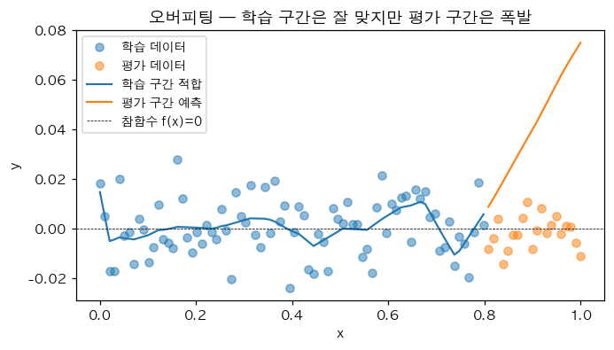
(1) 학습 데이터 (X, Y) 의 두 손실값 비교:
A = MSE(net(X), Y), B = MSE(net(X)*0, Y) (즉 0 예측의 MSE)
옳은 부등호는?
① \(A < B\) — 학습 구간에서는 net 이 노이즈까지 외워서 0 예측보다 작은 잔차
② \(A > B\)
③ \(A = B\)
④ 결정 불가
(2) 평가 데이터 (XX, YY) 의 두 손실값 비교:
C = MSE(net(XX), YY), D = MSE(net(XX)*0, YY)
옳은 부등호는?
① \(C < D\)
② \(C > D\) — 평가 구간에서 net 의 예측이 폭발 (그림 우측 참조)
③ \(C = D\)
④ 결정 불가
(3) 위 (1), (2) 결과로부터 「오버피팅의 정의」 와 가장 일치하는 진단은?
① 학습 손실 \(A\) 는 작지만 평가 손실 \(C\) 는 큼. 즉 학습 데이터에 과도하게 적합되어 보지 못한 데이터에 일반화하지 못함
② \(A = C\) 가 항상 성립
③ \(C < A\) 가 정상
④ 손실 비교만으로는 오버피팅 진단 불가
(4) 위 오버피팅의 「근본 원인」 은?
① 노드 수 \(m = 512\) 가 너무 적어서 표현력이 부족했기 때문
② 노드 수 \(m = 512\) 가 너무 많아서 표현력이 과해 노이즈까지 적합 가능 → 일반화 실패
③ Adam optimizer 가 잘못되어서
④ epoch 수 부족
(5) 시벤코 정리의 한계가 위 오버피팅 현상과 어떤 관련이 있는가?
① 시벤코는 표현력만 보장, 일반화는 보장하지 않음. 표현력이 너무 강하면 노이즈도 적합하여 오버피팅 발생
② 시벤코는 일반화도 보장하므로 오버피팅이 일어나지 않아야 함
③ 시벤코와 오버피팅은 무관
④ 시벤코는 깊은 네트워크에만 성립
4. 드랍아웃의 작동 원리와 효과
다음 그림은 동일한 오버피팅 시나리오에서 「Dropout 없음」 vs 「Dropout(0.8) 추가」 의 결과 비교이다.
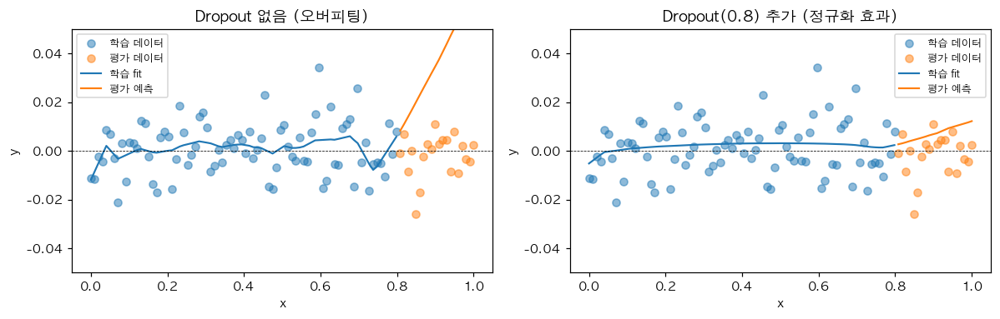
(1) 다음 코드의 결과로 가장 적절한 설명은?
torch.manual_seed(0)
u = torch.ones(10) # tensor([1., 1., 1., ..., 1.])
d = torch.nn.Dropout(0.8)
d(u)① 모든 원소가 약 0.2가 됨
② 임의로 80% 의 원소가 0이 되고, 살아남은 20% 의 원소는 그대로 1
③ 임의로 80% 의 원소가 0이 되고, 살아남은 20% 의 원소는 5 가 됨 (스케일링 \(1/(1-0.8) = 5\))
④ 임의로 20% 의 원소가 0이 되고, 나머지 80% 는 1.25
(2) Dropout(0.8) 의 스케일링 (\(\times 5\)) 이 적용되는 이유는?
① 학습 시 평균 출력값을 평가 시 (Dropout 비활성화) 와 일치시키기 위해. 만약 스케일링 없으면 평균 출력이 학습/평가 사이에 다름
② 학습 속도를 빠르게 하기 위해
③ 그래디언트를 5배 키우기 위해
④ 우연
(3) Dropout 이 적용된 네트워크에서 net.train() 모드와 net.eval() 모드의 차이는?
① net.train(): Dropout 활성 (랜덤 마스킹), net.eval(): Dropout 비활성 (모든 노드 사용, 스케일링 없음)
② 두 모드의 차이 없음
③ net.train() 만 가중치 업데이트
④ net.eval() 만 출력 가능
(4) 다음 4개의 네트워크 중 드랍아웃 레이어를 올바르게 배치한 것을 모두 고르시오. (드랍아웃은 활성함수 뒤에 위치해야 하며, 단 활성함수가 ReLU 이면 ReLU 와 Dropout 의 위치 교환 가능. 계산효율은 고려 X)
# (a)
net_a = torch.nn.Sequential(
torch.nn.Linear(1, 512), torch.nn.Sigmoid(),
torch.nn.Dropout(0.5), torch.nn.Linear(512, 1)
)
# (b)
net_b = torch.nn.Sequential(
torch.nn.Linear(1, 512), torch.nn.Dropout(0.5),
torch.nn.Sigmoid(), torch.nn.Linear(512, 1)
)
# (c)
net_c = torch.nn.Sequential(
torch.nn.Linear(1, 512), torch.nn.ReLU(),
torch.nn.Dropout(0.5), torch.nn.Linear(512, 1)
)
# (d)
net_d = torch.nn.Sequential(
torch.nn.Linear(1, 512), torch.nn.Dropout(0.5),
torch.nn.ReLU(), torch.nn.Linear(512, 1)
)① net_a, net_c, net_d
② net_b 만
③ 모두 잘못됨
④ 모두 동일
(5) 드랍아웃이 오버피팅을 줄이는 메커니즘에 대한 설명으로 가장 적절한 것은?
① 학습 시 무작위로 일부 노드를 끔으로써 특정 노드들의 「공적응 (co-adaptation)」 을 방지하고, 모델이 더 강건한 (robust) 표현을 학습하도록 유도
② 학습률이 자동으로 줄어들어서
③ 손실함수가 자동으로 작아져서
④ 학습 데이터 양이 자동으로 늘어나서
(6) 「오버피팅된 네트워크 + Dropout 추가 → 평가 데이터에서 항상 0 예측보다 잘 맞춤」 라는 주장의 적절성은?
① 항상 보장됨
② 본래의 net 보다는 일반화 성능이 좋아질 가능성이 크지만, 평가 데이터에서 0 예측보다 잘 맞춤은 보장되지 않음
③ 절대 그렇지 않음
④ Dropout 은 오히려 오버피팅을 악화시킴